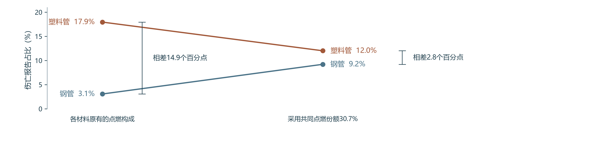
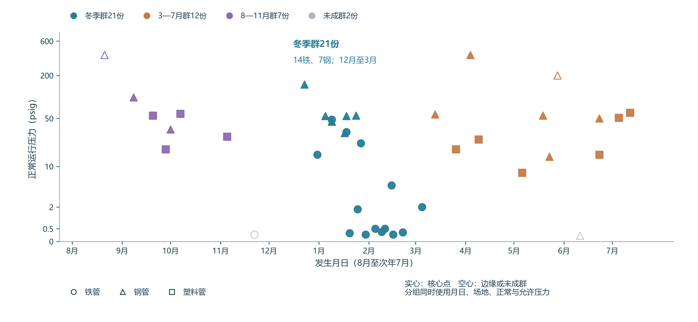
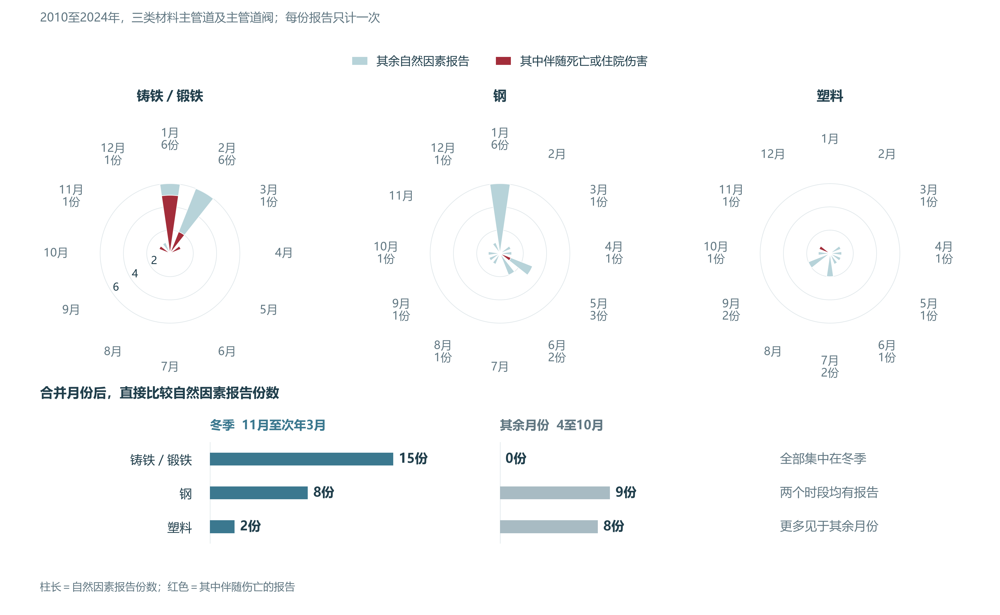
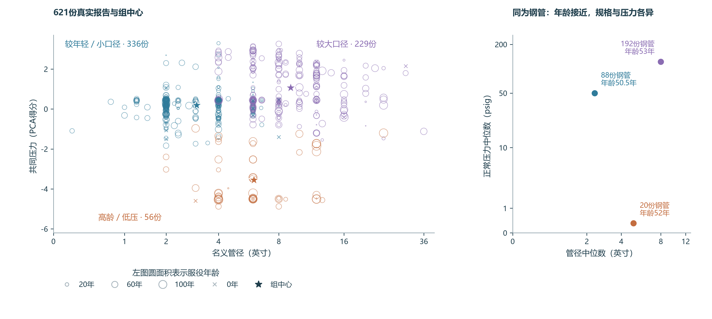

第一章发现，钢管与塑料管的伤亡报告率接近，铁管按管网规模计算的报告率较高。企业要据此安排检查与人员保护，还需了解损伤后发生了什么、哪些环境条件值得复核，以及设施规格是否相近。本章围绕施工处置、季节环境和设施分组，分别研究这三个问题。
2.1 施工损伤后的点燃与处置伤害
施工挖伤管道后，燃气企业还需查漏、停气和修复。人员保护需要覆盖这些后续任务，因此本节先比较泄漏燃气的点燃记录与伤亡，再核对人员受伤时正在做什么。
2010至2024年的钢管、塑料管主管道及主管道阀报告中，共有391份归为开挖损坏。钢管196份、塑料管195份，数量接近，伴随伤亡的却分别为6份与35份。图 6沿两种材料的报告，依次展示点燃和伤亡构成。
统一点燃构成后，钢塑开挖伤亡比例差明显缩小
报告中的点燃与伤亡路径

共同点燃构成下的比例比较



塑料管约一半报告记录燃气被点燃，钢管约一成；但在已点燃报告内，两组均约三成伴随伤亡。为了解点燃构成对总体差异的影响，本研究采用两种材料合计的点燃份额30.7%作为共同权重，保留各材料在点燃、其余报告内的伤亡比例。重算后，钢塑伤亡比例差从14.9缩至2.8个百分点。这说明总体差异很大一部分与点燃构成有关，复盘应继续追踪燃气状态和人员活动。条件计数与构成重算
原案说明了人员保护需要延续到哪些任务。35份塑料管开挖伤亡报告中，6份明确记载第三方先损伤管道，燃气公司人员随后在查找损伤、停气、安装旁通或修漏中受伤。2019年的一宗事故中，人员到场后，在夹断管道、停止气流期间发生点燃，三名装配工烧伤，其中一人住院。原案时序与引句
因此，第三方造成的损伤被发现后，现场人员仍可能在处置阶段受伤。企业复盘应分别记录最初损伤者与后续处置人员，核对查漏、停气、旁通和修漏期间的燃气状态、人员位置与受伤时刻。
2.2 自然因素事故中的季节线索
企业检查现存铁管时，需要了解哪些环境条件常见于历史事故。为寻找季节与运行条件相近的事故，本节从2010至2024年三类材料主管道及主管道阀的693份报告中，提取原报告归为“自然因素”的全部42份；这42份实际均为主管道报告。
DBSCAN根据邻近报告的密度形成组。本次使用月日、场地类型、正常压力和允许压力四个原始字段：月日反映季节，场地和压力补充设施情境。各地报告共同参与比较，材料与伤亡在分组后查看。邻域内至少4份报告、含自身的位置为核心点，邻近的核心点及其边缘记录连接成组。距离函数与参数
21份铁、钢自然因素事故形成跨年的冬季群



最大一组有21份报告，含14份铁管、7份钢管，全部发生于12月至3月，来自17家运营商。其中11份归为温度作用、6份为地面移动，提示冬季金属管道事故值得继续核对温度与地面条件。其余形成12份、7份两组，另有2份未成群；全部报告仍在图中保留。
图 8展示全部42份的月份分布，补充聚类以外的全貌：铁管15份自然因素报告都在11月至次年3月，冬季集中最明显；钢管和塑料管在其他月份也有报告。
铁管的自然因素报告集中在11月至次年3月



自然因素原案还提供了具体检查线索。2014年的一份报告记录现场冻土，填报者认为断裂可能与冻胀有关；2015年的一份报告记载管道压在旧砖基础上，填报原因为土壤沉降。结合季节分布、相似事故群与这些原案，企业检查现存铁管时，应复核当地冻土、沉降和管道支撑条件，并对照安装与维修记录。
2.3 管龄、管径与压力的设施分组
选择相似事故作为检查参照，需要了解设施的实际规格。同一种材料、使用年数接近的管道，管径和压力仍可能相差很大。本节采用服役年龄、管径和第一章得到的共同压力进行K-means聚类，研究材料名称之外还有哪些设施差别。
分析采用三项资料完整的621份主管道报告。管径取对数后，年龄、管径和共同压力各自统一尺度，再重复“就近归组—更新中心”。比较2至8组的结果，三组的平均轮廓系数最高，本节采用三组描述设施条件。材料与伤亡均留到分组后查看。
同为钢管、年龄接近，管径和压力仍相差明显



图 9左侧保留全部621份真实报告及三个组中心。较年轻／小口径组以塑料为主，高龄／低压组以铁管为主，钢管则跨越三组。右侧进一步比较同为钢管的设施：三组年龄中位数均约51至53年，但管径与正常压力在图上明显分开，正常压力中位数从0.31跨至122.5 psig。相近的钢管年龄，对应着明显不同的规格与压力。
采用共同压力后，主要分组结构与只用正常压力的参照方案接近。因此，企业整理相似事故或核对设施条件时，应同时收集年龄、管径与压力；仅凭材料名称和使用年数，仍会合并实际条件差别很大的设施。原单位画像与输入对照
2.4 检查与人员保护的结论
施工损伤后的人员保护，应延续到查漏、停气、旁通和修漏任务；现存铁管的环境检查，应结合冬季记录复核冻土、沉降与支撑条件；选择相似设施作参照，应同时核实年龄、管径和压力。企业可以将这些线索与当地泄漏、维修及现场测量记录结合，确定需要进一步检查的设施与需要重点保护的作业阶段。
资料与计算说明
分析单位为一份事故报告。伤亡表示整起事故至少一人死亡，或因伤入院并至少住一晚；多人伤亡仍计一份。受伤者的任务和事件先后，由事故经过核对。PHMSA填报说明
| 比较用途 | 范围与数量 |
|---|---|
| 材料、原因与设施条件 | 2010至2024年，主管道或主管道阀，铁／钢／塑料，共693份、141份伤亡 |
| 点燃与处置伤害 | 上述范围中的钢塑开挖391份，41份伴随伤亡 |
| 季节相似群 | 上述范围内全部42份自然因素报告，均为主管道；15铁、17钢、10塑料 |
| 设施K-means | 年龄、管径、共同压力完整的621份主管道，125份伴随伤亡 |
比较描述已报告事故中的构成与相似条件。季节分布和设施分组提供环境及信息采集线索；相应的全网事故率还需匹配各季节、各设施条件的在用管网规模。
点燃构成、条件比例与处置时序
主要原因沿用PHMSA的调查分类。开挖损坏涵盖挖掘、钻孔等造成的当时损伤及旧施工损伤后的失效；错误操作涵盖运行、维护与维修的操作问题。损伤者身份和受伤任务由人员字段及叙述补充。原因分类，第33至37页
共同点燃份额为120／391，其余报告份额为271／391。钢管重算为30.7%×30.0%＋69.3%×0.0%＝9.2%；塑料管为30.7%×32.0%＋69.3%×3.2%≈12.0%，计算使用未四舍五入的比例。重算固定各材料在两种点燃状态内的观察比例，用于辨认汇总构成的影响。点燃与伤亡是整报告字段，因果过程及保护措施效果需要具体时序和额外对照。
391份逐份输入 · 四个条件单元 · 构成比较 · 原案时序
月日、场地与两项压力的DBSCAN距离
四个原始字段为LOCAL_DATETIME、LOCATION_TYPE、NORMAL_PSIG、MOP_PSIG。对两份报告i、j，定义：
T为366天参考日历上的最短跨年月日差除以45天。场地相同则S＝0，相异则S＝1。P为ln（1＋正常压力）的标准化值，Q为ln（1＋允许压力）的标准化值；均值和总体标准差取自全部1,550份报告。各项统一为无量纲，场地与压力用于区分同一季节内的设施情境。
邻域阈值eps＝1，最低4份含自身；邻域数量达到4的位置为核心点，核心点相连并吸收邻域内的边缘点，其余记为未成群。分组具有连接性，整个群的跨度可以超过单个邻域。算法使用完整四字段距离；图上显示月日与正常压力。横轴从8月排至次年7月，使跨年的冬季连续；纵轴间距取ln（1＋正常压力），刻度保留psig。DBSCAN方法说明
距离设置依据已有月份观察，用于探索相似事故。冬季群21份均为核心点；另外两组分别12份、7份，各含一个边缘点。冬季群细项为温度作用11份、地面移动6份、暴雨／洪水2份、其他自然因素2份。
保持42份和参数相同，加入经纬度地区项时，冬季报告分为13份、4份两个地域群；去掉地区项后，跨地区的相似冬季报告共同形成21份群，更贴合本节的季节比较目的。地理项对照
阈值改为0.8时得到11、10、8、7份四群，6份未成群；改为1.2时，42份全部相连。在范围更广的106份自然因素报告中，当前阈值也会连成跨月的大群。因此，本节按既定42份主管道范围描述相似事故，结合原月份全貌和具体归因解释冬季线索。逐份组别、核心及近邻数量 · 距离项与邻接 · 阈值对照 · 各群构成
原月份图按发生月统计，冬季固定为11月至次年3月；原报告中的冻土、沉降和支撑记录用于解释环境过程。季节图覆盖全部42份，保留了聚类未成群报告。原月份计数
年龄、管径与共同压力的K-means方法
693份报告中，623份安装年份已知，两份阀门报告缺少管径，其余621份主管道资料完整。服役年龄AGE_YEARS为发生年减安装年，保留有限且非负的值；管径PIPE_DIAMETER须大于零；共同压力PRESSURE_PC1采用第一章三项压力PCA的已保存得分。管径取ln（1＋原值），共同压力得分直接使用，再以全部621份各自的均值与总体标准差统一三个输入的尺度。
全部621份共同拟合描述性分组。固定seed＝20261109、n_init＝50、max_iter＝500、algorithm＝lloyd，比较k＝2至8，按平均轮廓系数最高选择k＝3。轮廓系数比较组内接近程度和最近其他组的距离，越大表示本次分组越清晰。K-means说明 · 轮廓系数说明
共同压力方案三组为336、229、56份；正常压力参照方案以ln（1＋正常压力）替代共同压力，其余记录、变换、参数与候选组数相同。两套均选三组，平均轮廓系数为0.346与0.343，分组一致性ARI＝0.958，说明主要设施结构得到保留。这些量评价设施分组；人员伤亡预测另需监督模型及回测。
左图星号来自模型中心：在标准化空间求均值，再还原管径变换后定位。右图是各组钢管的原单位中位数，用于解释设施差异。年龄以圆面积表示，零年龄用叉号；同位置记录原位重合，全部保留。图中共同压力为无量纲得分，正常压力单位为psig。
621份输入与分组 · 实际组中心 · 各材料原单位画像 · 2至8组比较 · 完整参数
数据与复算
本章从第一章合并后的分析表及原始量对照表按报告编号连接计算。DBSCAN使用上述四个原始字段，K-means使用年龄、管径与共同压力。下载复算数据与脚本，解压后运行：
python research/analysis/recalculate_chapter2_eda.py
运行记录及数据指纹保存输入版本、样本量和计算环境。